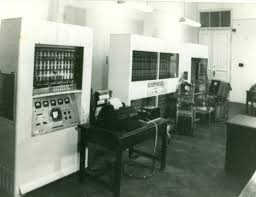

M-3 számítógép

A Magyar tudományos akadémia kibernetikai kutatócsoport által fejlesztett M-3 volt magyarország első elektronikus számítógépe. A szovjetúnióban kifejlesztett MESZM alapjaira támaszkodva, magyar mérnökök vezetésével fejlesztették ki. 1959-ben már üzembe is helyezték a kutatócsoport épületében budapesten.
Felépítése
- Technológia: Elektroncsöves
- Memória: Mágnesdobos adattárolás
- Bemeneti eszközök: Lyukszalag
- Kimeneti eszközök: Lyukszalag és távíró
Az m-3 Másodpercenként több ezer műveletet volt képes elvégezni.
jelentősége
Nagyon hasznos volt lineáris és nem lineáris egyenletek megoldásához, ez miatt orjási hatással volt a magyar informatikára, ez miatt több más dolog is kialakolt, pl. Létrejött az a szakmai műhely amely képes volt az országban először egy működő számítógépet felépíteni.
Fejlesztés vezető
Dömöli Bálint
1957-től az MTA Kibernetikai Kutató Csoportjában részt vett az M-3 létrehozásában. 1966-ban a Moszkvai Állami Egyetemen kandidátusi fokozatot szerzett számítástudományi témában.
1965 és 1990 között vezető állásokat töltött be az Információ Feldolgozási Laboratórium, a Számítógép-alkalmazási Kutató Intézet, majd a Számítástechnikai Koordinációs Intézet szoftverfejlesztő részlegeiben.
Az NJSZT alapító tagja, majd 1985 és 1990 között elnöke, 1994 óta tiszteletbeli elnöke. Az NJSZT Informatikatörténeti Fórumának alapító elnöke.
Kitüntetései
- Akadémiai díj (MTA. 1960, 1983)
- Neumann-díj (NJSZT, 1980)
- Munka Érdemrend ezüst fokozat (1969)
- Állami díj (megosztott, 1988)
- Gábor Dénes-díj (Novofer Alapítvány, 2003)
- a Magyar Köztársasági Érdemrend Tiszti keresztje (2005)
- Életmű-díj (NJSZT, 2005)
- IFIP Silver Core (IFIP International Federation for Information Processing, 2007)
- Kozma László Emlékérem (BME, 2011)